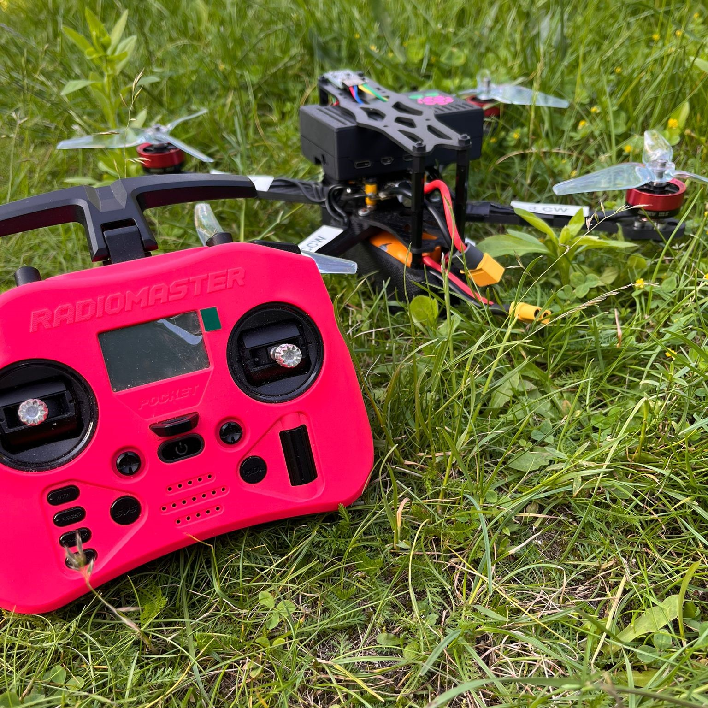
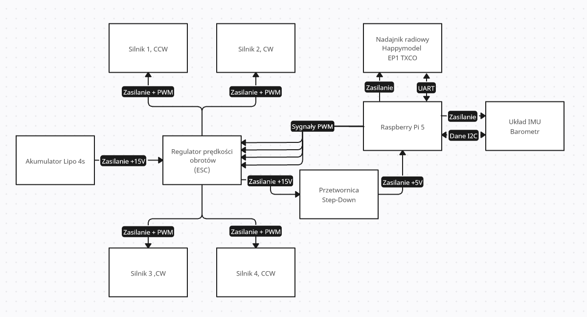
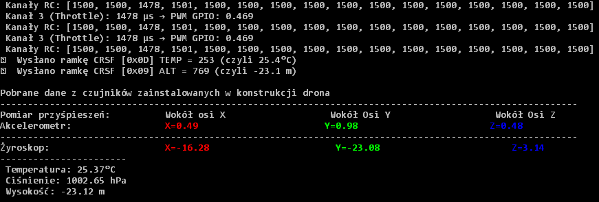
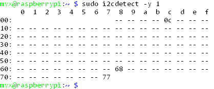
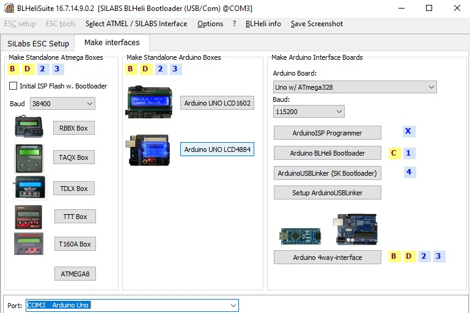
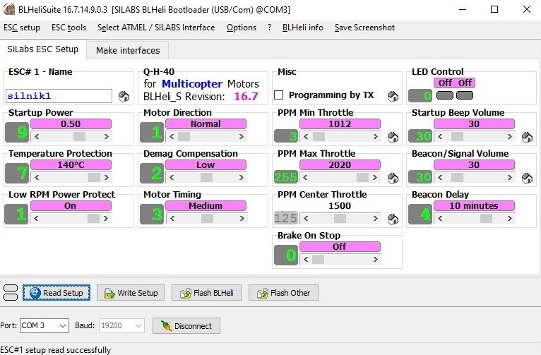

Najważniejsze funkcje
-
Odbiór danych RC z odbiornika ExpressLRS przez
CRSF / UART
-
Dekodowanie 16 kanałów RC zapisanych jako wartości 11-bitowe
-
Walidacja ramek przy użyciu
CRC DVB-S2
-
Własny mikser silników dla throttle, roll, pitch i yaw
-
Sterowanie czterema silnikami poprzez sygnały PWM
-
Awaryjne zatrzymanie silników za pomocą osobnego kanału RC
-
Odczyt akcelerometru i żyroskopu z MPU9250
-
Pomiar temperatury, ciśnienia i wysokości z BMP280
-
Generowanie telemetrii CRSF dla temperatury i wysokości
Gotowa konstrukcja
Raspberry Pi 5 pełni rolę centralnej jednostki sterującej.
Do platformy podłączony jest odbiornik ELRS, czujniki oraz
czterokanałowy regulator ESC sterujący silnikami BLDC.

Architektura systemu
CRSF / UART — odbiornik ELRS przekazuje dane kanałów RC
do Raspberry Pi.
I²C — Raspberry Pi komunikuje się z MPU9250 i BMP280.
PWM — Raspberry Pi generuje sygnały sterujące dla
czterokanałowego ESC.
CRSF Telemetry — system może przesyłać informacje
o temperaturze i wysokości.

Komunikacja CRSF
Odbiornik ExpressLRS komunikuje się z Raspberry Pi
przez port szeregowy:
/dev/serial0 → /dev/ttyAMA0
Baud rate: 420000
Program wyszukuje ramki CRSF, sprawdza ich poprawność,
oblicza CRC i dekoduje wartości kanałów używanych później
do sterowania dronem.
Sterowanie silnikami
Cztery kanały PWM Raspberry Pi zostały przypisane
do poszczególnych wejść regulatora ESC.
- Motor 1 — GPIO 12
- Motor 2 — GPIO 13
- Motor 3 — GPIO 18
- Motor 4 — GPIO 19
Zakres sygnału używany w projekcie:
PWM MIN: 1000 µs
PWM MAX: 2020 µs
Odczyt sensorów i telemetria
Podczas pracy programu w terminalu prezentowane są między innymi:
wartości kanałów RC, throttle, dane z akcelerometru i żyroskopu,
temperatura, ciśnienie oraz obliczona wysokość.

Magistrala I²C
Czujniki zostały podłączone do magistrali I²C.
Podczas diagnostyki wykrywane były między innymi urządzenia:
MPU9250 — 0x68
BMP280 — 0x77

Konfiguracja ESC
Parametry regulatora ESC zostały skonfigurowane
przy użyciu BLHeliSuite.
Arduino zostało wykorzystane jako interfejs umożliwiający
bezpośrednie połączenie z ESC.

Zakres pracy ESC
Zakres wejściowy regulatora został skonfigurowany
tak, aby odpowiadał wartościom generowanym później
przez program działający na Raspberry Pi.

Środowisko testowe
- Raspberry Pi 5 Model B Rev 1.0
- Debian GNU/Linux 12 Bookworm
- Kernel 6.12.34+rpt-rpi-2712
- Python 3.11.2
- smbus2 0.4.2
- pyserial 3.5
- bmp280 1.0.0
- gpiozero 2.0.1
Projekt był testowany w powyższym środowisku.
Ze względu na bezpośrednie wykorzystanie GPIO, UART i I²C,
inne wersje systemu lub kernela mogą wymagać dodatkowej konfiguracji.
Ograniczenia
Jest to eksperymentalny system sterowania oparty o Raspberry Pi.
Program odczytuje dane z IMU, jednak obecna wersja nie implementuje
pełnego zamkniętego układu stabilizacji PID.
Projekt skupia się przede wszystkim na komunikacji ze sprzętem,
dekodowaniu CRSF, obsłudze sensorów, mikserze silników,
generowaniu PWM i telemetrii.